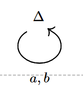
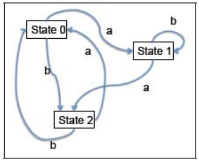
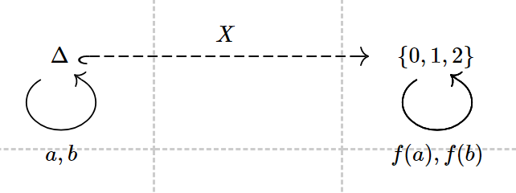
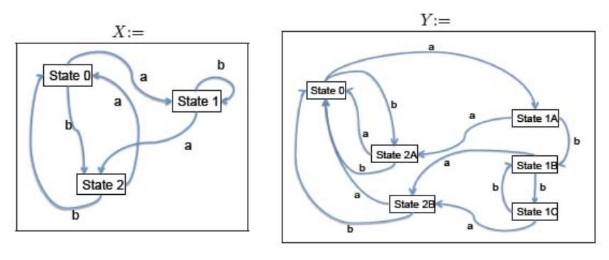
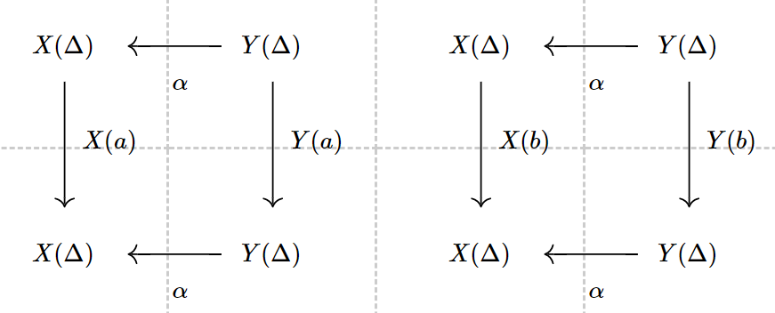

当时这两颗变成紫色或绿色的灿烂星宿，想必也在闪烁吧。
Let’s consider the alphabet Σ={a,b}, and C,D are two categories.
C is:

What really matters is:
Deterministic Finite Machine, DFA, can be regarded as the functor from monoid (List(Σ),[],++) to the category of sets.
In fact, since HomSet(List(Σ)×S,S)→≅HomSet(Σ×S,S), so we can think the functor from C to Set.
For example, consider the DFA:

it can be regarded as the functor X:

X(Δ)=ThesetofstatesX(a)=δaX(b)=δb
Obviously it’s a functor from C to Set, although only one of the sets is involved
Then what would happen if two DFAs work equivalently?
Two DFAs accept the same language if and only if there exists a natural transformation.
Example: consider the two DFAs as following:

They work equivalently, since we can merge state 1A,1B,1C and 2A,2B in DFA Y.
That means we have a natural transformation Y→X.
Consider the two diagrams:

where
X(Δ)={0,1,2}Y(Δ)={0,1A,1B,1C,2A,2B}
We can guarantee that there exists a function α:{0,1A,1B,1C,2A,2B}→{0,1,2} making two diagrams commute.
In this example, α is quite obvious:
α(0)=0α(1A)=α(1B)=α(1C)=1α(2A)=α(2B)=2
Then the diagram commute:
α∘Y(a)(1A)=α(2A)=2X(a)∘α(1A)=δa(1)=2